Two languages, one adventure
Listen to recorded Thai or English narration and read along with the story text.
A little adventure, together
Available nowStep into a paper-cut world of familiar tales. Read together, listen in Thai or English, and discover the little things along the way.
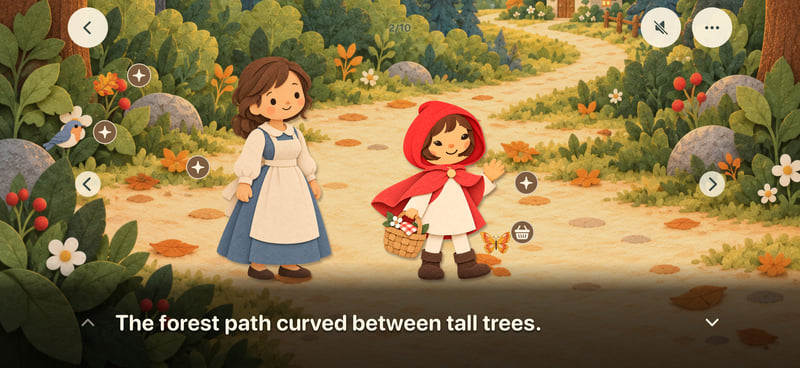
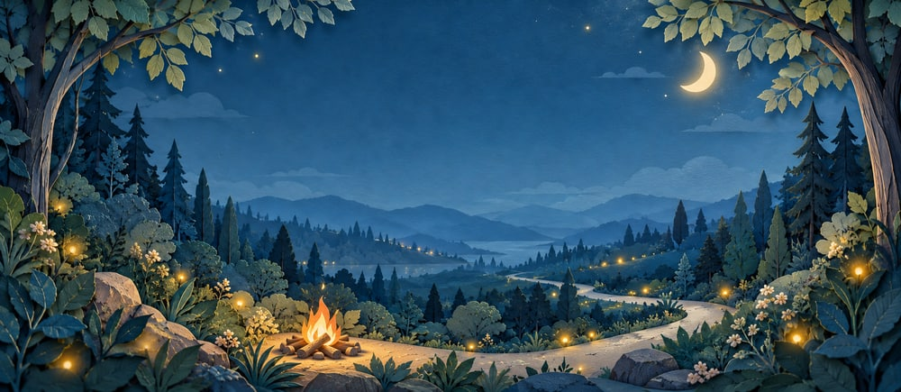
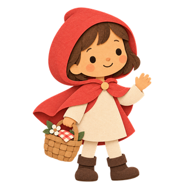
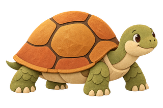
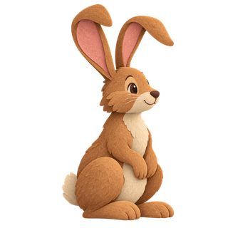
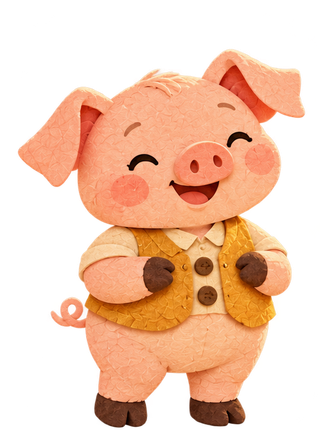
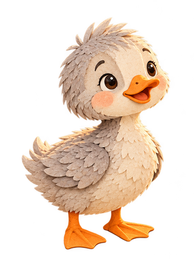
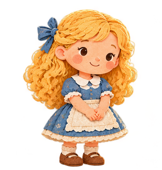
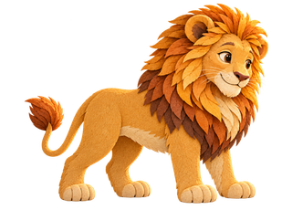
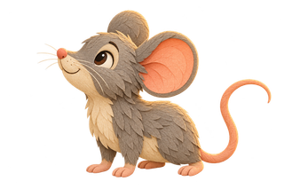
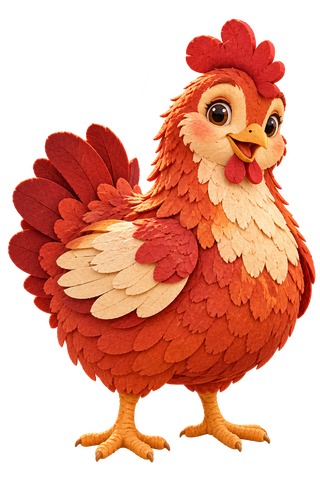
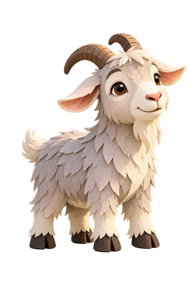
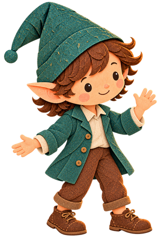
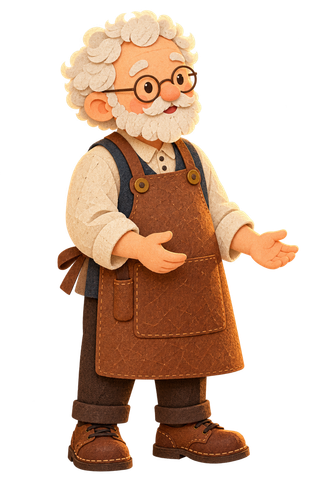
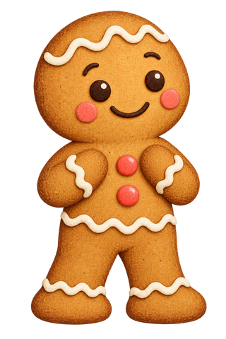
A storybook made for reading, listening and exploring together.
Listen to recorded Thai or English narration and read along with the story text.
Choose a character and make its appearance your own.
Tap the illustrated scene to explore its interactions.
From a winding forest path to a very determined little hen, familiar characters are waiting on the shelf.
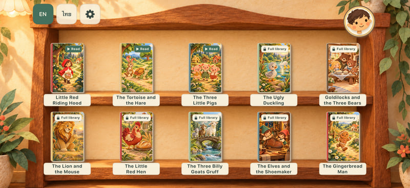
Oonmoon 0.7.8 includes improvements for window size, safe areas and display divisions, with selected simulator checks completed. Fold transitions, Split View and physical iPhone Duo remain unverified. Hardware is not yet released at this review date (10 October 2026).
Tap the character or press Enter to change the dance.
Available on the App Store.
App Store ↗